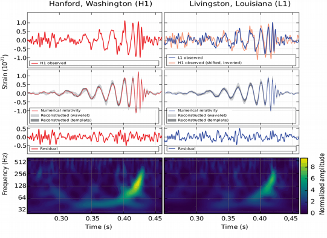

Gravitational waves

The breakthrough discovery of the first gravitational wave signal in September 2015 (Nobel Prize 2017) has opened a new window to the Universe. Analyses of the signal waveforms during the initial inspiral, merger and final ringdown phase provide crucial information about the properties of superheavy stellar objects.